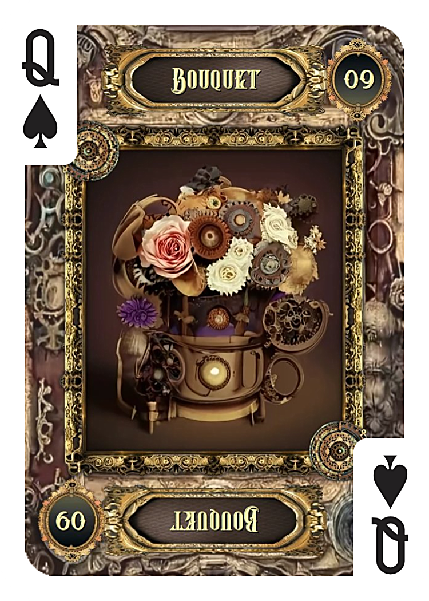
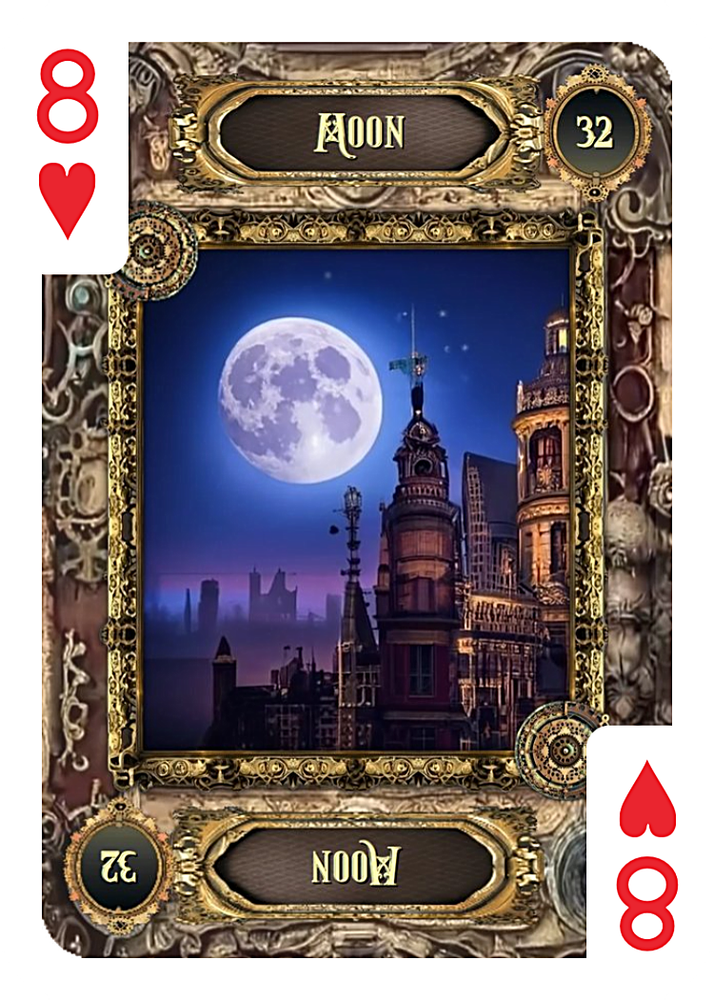
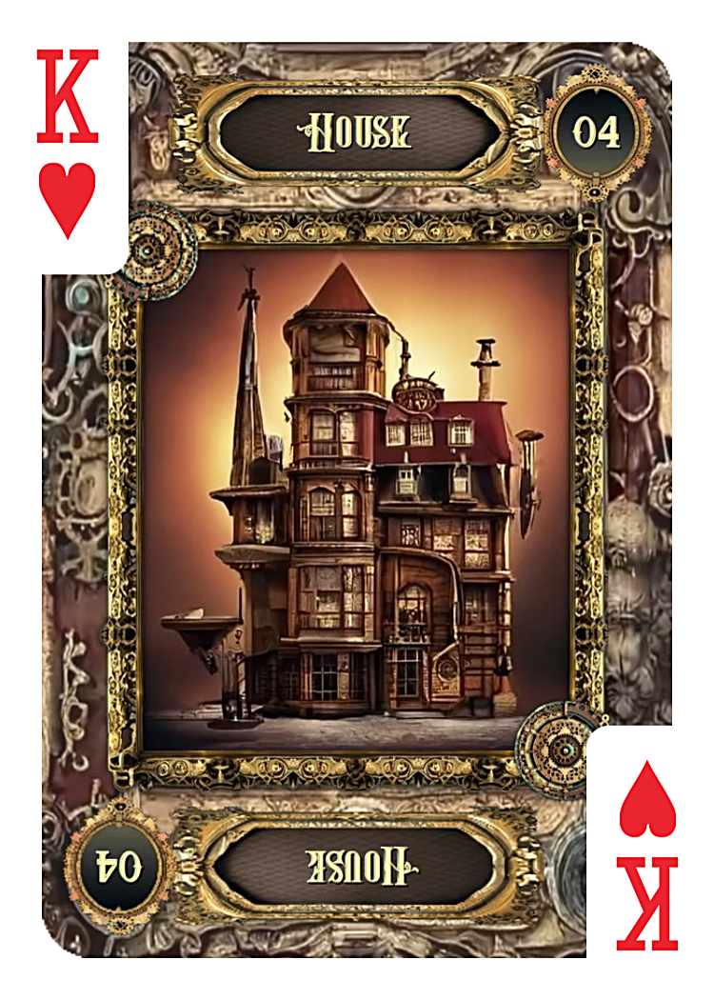
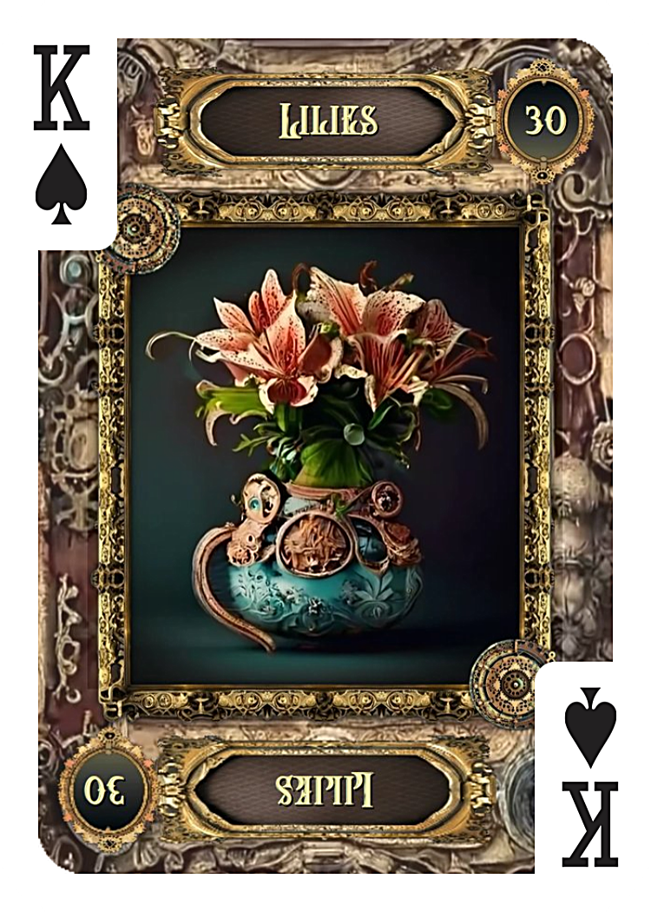
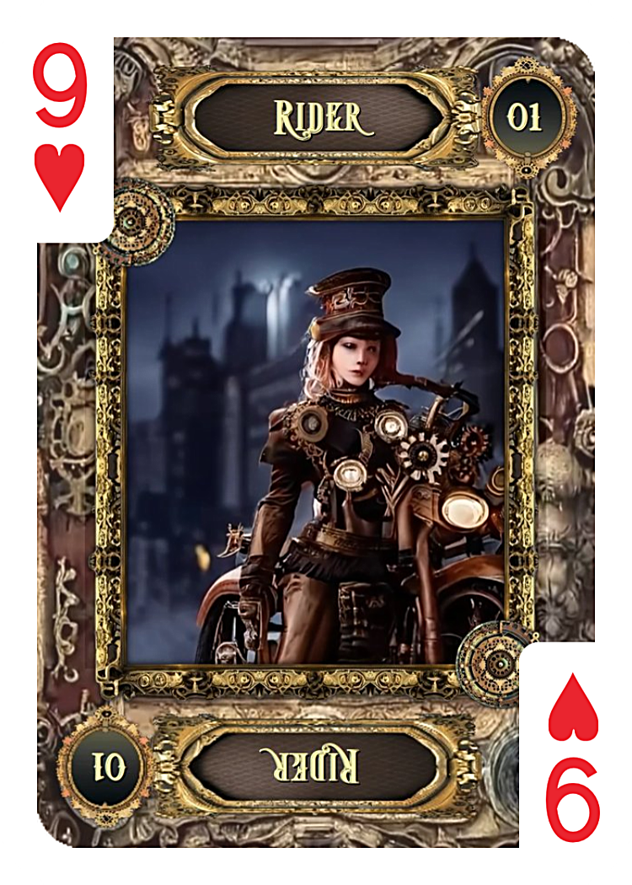
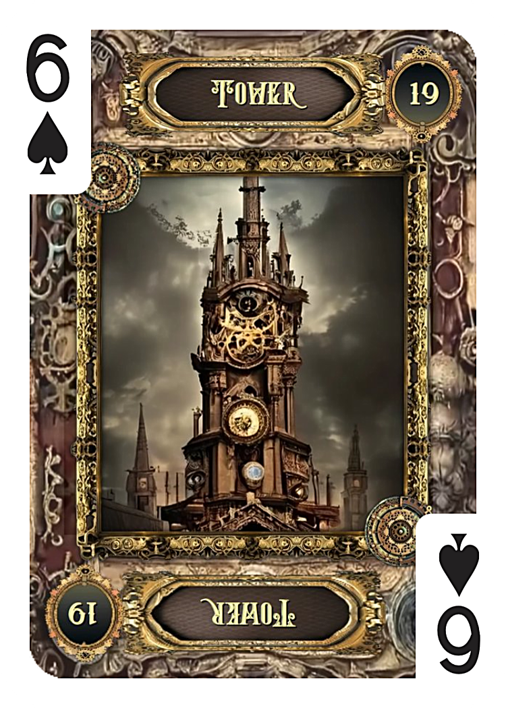

① ゴールデンウィークに連絡は来る？占い結果
花束のカードは、連絡占いにおいて「来るとしたら嬉しい形で」という意味を持ちます。
単なる事務的な連絡ではなく、どこかやわらかく、優しい印象のやり取りになりやすいカードです。
そこに月が重なることで、「感情が動いたときの連絡」というニュアンスが強まります。
ゴールデンウィークのように時間に余裕があり、少し気持ちが緩むタイミングでは、過去の相手を思い出すことも増えます。
そのため今回の結果は、
「ふとした感情や雰囲気に後押しされて、連絡してくる可能性がある」
という流れとして読み取れます。
ただし月は、長期的な決意というより"その時の気分"も表すカード。
連絡が来たとしても、深い意味をすぐに求めすぎないことが大切です。
② 彼の今の気持ち
家と百合の組み合わせは、とても穏やかな印象です。
あなたに対して「安心できる存在」「落ち着いた関係だった」という気持ちは、今も残っていると考えられます。
そして騎士が出ていることで、「連絡しようかな」という行動のエネルギーも確かにあります。
完全に気持ちが切れている状態ではありません。
しかし、バックカードに出ている塔が重要です。
塔は距離や孤立を意味し、「あえて距離を保ちたい」という意識も同時に表しています。
つまり彼の中では、
・安心感や穏やかな好意はある
・でも自分のペースや距離は崩したくない
という、少し矛盾した状態になっているようです。
③ それぞれのカードの意味

花束
- 嬉しい出来事
- 好意
- プレゼントのような出来事

月 BACK
- 感情
- ロマンチック
- 雰囲気に流される気持ち

家
- 安心
- 落ち着く関係
- 戻れる場所

百合
- 穏やかさ
- 平和
- 成熟した関係

騎士
- 連絡
- 行動
- 動き出すエネルギー

塔 BACK
- 距離
- 孤立
- 自分の殻にこもる
④ なぜ"優しい連絡"と"距離"が同時に出るのか
今回のリーディングは、全体として一貫しています。
連絡のカードでは「花束＋月」＝優しく感情的な動き
気持ちのカードでは「家＋百合＋騎士」＝穏やかさと軽い行動意欲
そこに「塔」＝距離を保つ意識
この組み合わせから見えるのは、
「嫌いではないし、むしろ良い印象は残っている。でも関係を深く戻す覚悟まではない」
という、とても現実的な心理です。
ゴールデンウィークという特別な時期は、人の気持ちを一時的に動かします。
その"揺れ"が、今回のカードにはよく表れているように感じます。
まとめ
今回の占い結果から見ると、ゴールデンウィーク中に連絡が来る可能性は比較的高めです。
ただしその連絡は、復縁に直結するような重いものではなく、あくまで軽やかで感情的なものになりやすいでしょう。
彼の中には安心感や穏やかな好意が残っている一方で、距離を保ちたい気持ちも強くあります。
そのため、もし連絡が来た場合は、流れに任せて軽く受け取ることが、今の関係には合っているのかもしれません。